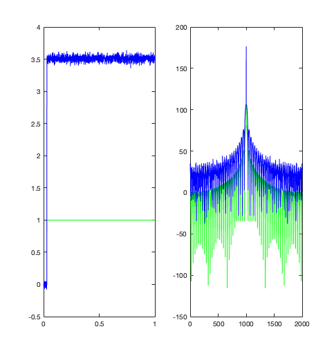
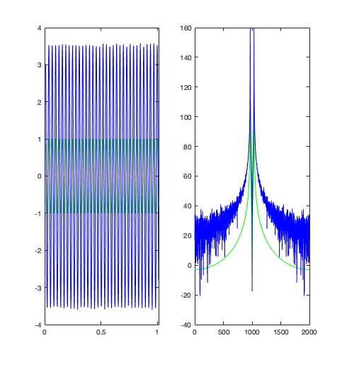
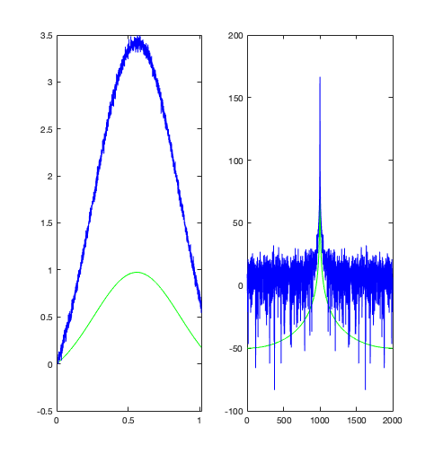

function [] = time1()
set(0,'DefaultFigureWindowStyle','docked')
close all
R1=1;
R2=2;
R3=55.4247;
R4=0.1;
Ro=1000;
a=100;
L=0.2;
Cap=0.25;
Cn=0.00001;
G = zeros(8,8);
C = zeros(8,8);
F = zeros(8,8);
Vin = linspace(-10,10,100);
Vo = zeros(100,1);
V3 = zeros(100,1);
Av = zeros(100,1);
w = 2*pi*linspace(0,80,100);
G(1,1) = 1/R1;
G(1,2) = -1/R1;
G(2,1) = -1/R1;
G(2,2) = -1/R1+1/R2;
G(3,2) = 1;
G(3,3) = 1/R3;
G(4,4) = 1/R4;
G(5,4) = 1/R4;
G(4,5) = -1/R4;
G(5,5) = 1/R4+1/Ro;
G(6,2) = -1;
G(6,1) = 1;
G(7, 2) = 1;
G(7, 3) = -1;
G(8, 3) = -a/R3;
G(8, 4) = 1;
G(1, 6) = 1;
G(2, 7) = 1;
G(3, 7) = -1;
G(4, 8) = 1;
C(2,1) = Cap;
C(2,2) = -Cap;
C(6,6) = L;
C(3,4) = Cn;
time=zeros(2000,1);
VStep=zeros(2000,1);
Vo = zeros(2000,1);
for i=1:2000
if i==1
time(i)=0.0005;
else
time(i)=time(i-1)+0.0005;
end
if time(i)>=0.03
VStep(i)=1;
end
F(6) = VStep(i);
A = G + C ;
V = A\F;
Vo(i) = V(5);
F(3)=randn()/100;
end
fin=fft(VStep);
ffin=fftshift(fin);
fout=fft(Vo);
ffout=fftshift(fout);
figure (5)
subplot(1,2,1)
plot(time,VStep,'g')
hold on
subplot(1,2,1)
plot(time,Vo,'b')
figure (5)
subplot(1,2,2)
plot(20*log (abs(ffin)),'g')
hold on
subplot(1,2,2)
plot(20*log (abs(ffout)),'b')
time=zeros(2000,1);
Vsin=zeros(2000,1);
Vo = zeros(2000,1);
f=1/0.03;
for i=1:2000
if i==1
time(i)=0.01;
else
time(i)=time(i-1)+0.0005;
end
Vsin(i)=sin(2*pi*f*time(i));
F(6) = Vsin(i);
A = G + C;
V = A\F;
Vo(i) = V(5);
F(3)=randn()/100;
end
fin=fft(Vsin);
ffin=fftshift(fin);
fout=fft(Vo);
ffout=fftshift(fout);
figure (6)
subplot(1,2,1)
plot(time,Vsin,'g')
hold on
subplot(1,2,1)
plot(time,Vo,'b')
subplot(1,2,2)
plot(20*log (abs(ffin)),'g')
hold on
subplot(1,2,2)
plot(20*log (abs(ffout)),'b')
Vo = zeros(2000,1);
sd=0.3;
mu=.5;
Vgaus = 2.23/(2*pi*sd)*exp(-(time-0.06-mu).^2/(2*sd^2)) - 0.2085;
for i=1:2000
F(6) = Vgaus(i);
A = G + C;
V = A\F;
Vo(i) = V(5);
F(3)=randn()/100;
end
fin=fft(Vgaus);
ffin=fftshift(fin);
fout=fft(Vo);
ffout=fftshift(fout);
figure(7)
subplot(1,2,1)
plot(time,Vgaus,'g');
hold on
subplot(1,2,1)
plot(time,Vo,'b');
figure(7)
subplot(1,2,2)
plot(20*log (abs(ffin)),'g')
hold on
subplot(1,2,2)
plot(20*log (abs(ffout)),'b')
end
  